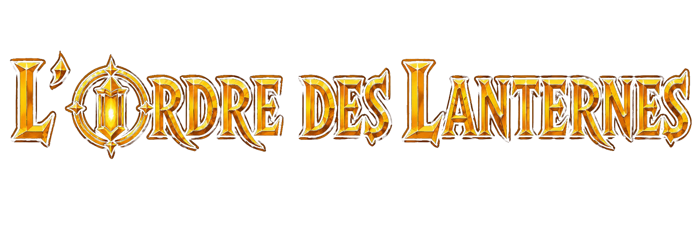

Un monde où les sylphes vivent dans les lanternes,
et où les lanterneurs gardent l'équilibre entre deux mondes.
Monde originel des créatures fantastiques, redécouvert en 535 après J.-C. par Galaad du Lac et Merlin l'enchanteur. Composée de quatre continents aux paysages variés, séparés du Monde Commun par des portails que seuls les membres de l'Ordre peuvent traverser librement.